Hosted at https://milesturin.github.io/proj-webpage-template/proj2/index.html
Overview
In this project I implemented a variety of different algorithms regarding bezier curves and mesh operations. Using these tools we are able to subdivide meshes into more detailed ones, light the mesh using vertex normals, and more. We are also able to create customizable bezier curves.
Section I: Bezier Curves and Surfaces
Part 1: Bezier Curves with 1D de Casteljau Subdivision
Briefly explain de Casteljau's algorithm and how you implemented it in order to evaluate Bezier curves.De Casteljau's algorithm is a method of computing a point on a Bezier curve. The algorithm says that for every pair of points defining our Bezier curve, use linear interpolation on them with t equaling how far along our Bezier curve we want to compute a point. Recursively interpolate between pairs of our newly computed points and continute to recurse until there is only one point left. That point is the point on our Bezier curve. I was only tasked with implementing one recursive step of De Casteljau's algorithm: I did so by defining a templatized lerp function (such that it works with Vector2D), iterating through the points provided, and calling lerp on each pair of points. The result is pushed back into a new vector which is returned.
Take a look at the provided .bzc files and create your own Bezier curve with 6 control points of your choosing. Use this Bezier curve for your screenshots below.
Show screenshots of each step / level of the evaluation from the original control points down to the final evaluated point. Press E to step through. Toggle C to show the completed Bezier curve as well.
|
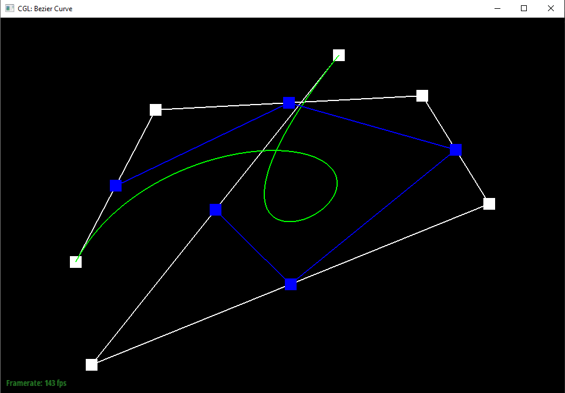
|
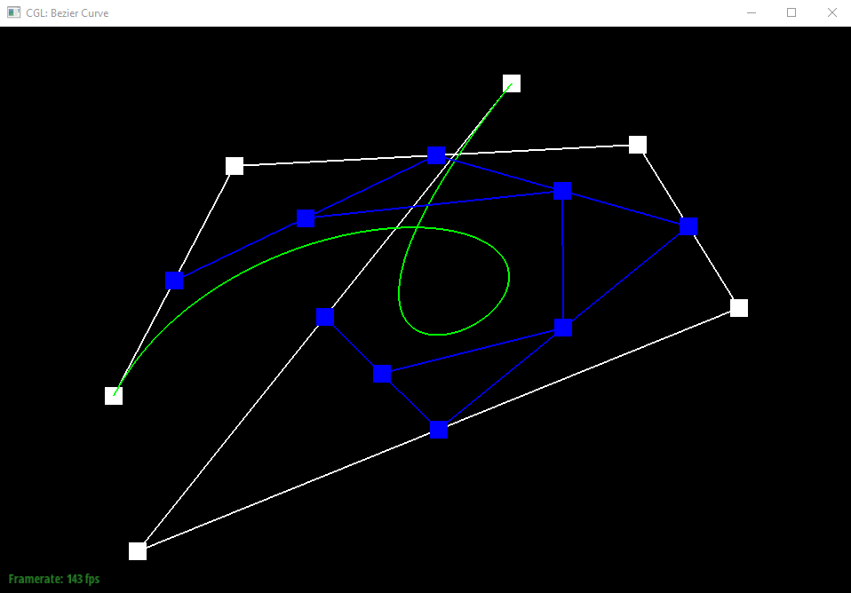
|

|
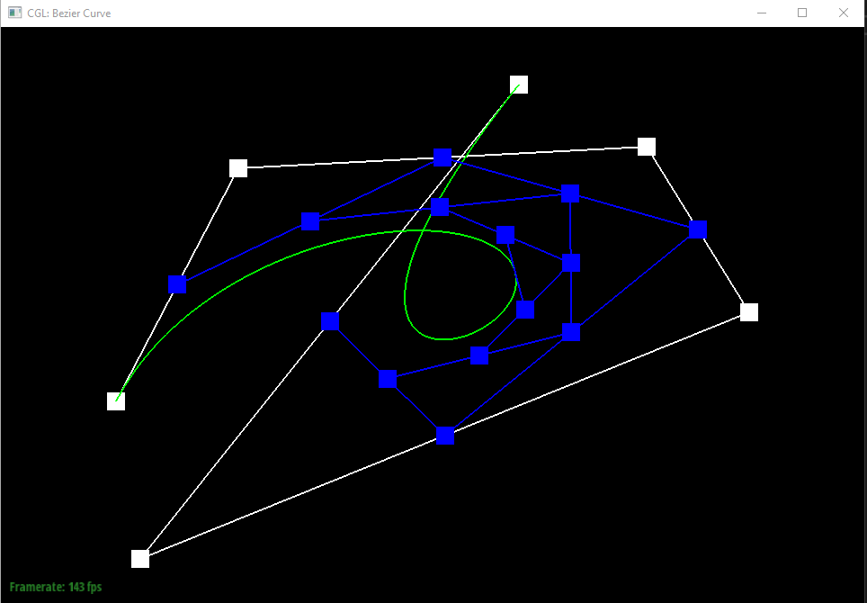
|
|
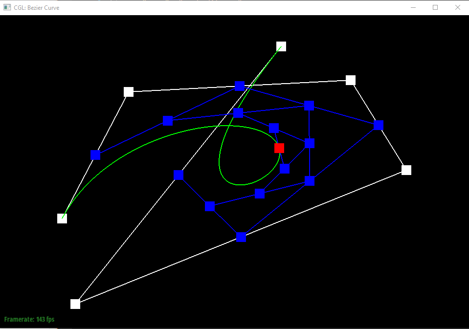
|
Show a screenshot of a slightly different Bezier curve by moving the original control points around and modifying the parameter \(t\) via mouse scrolling.
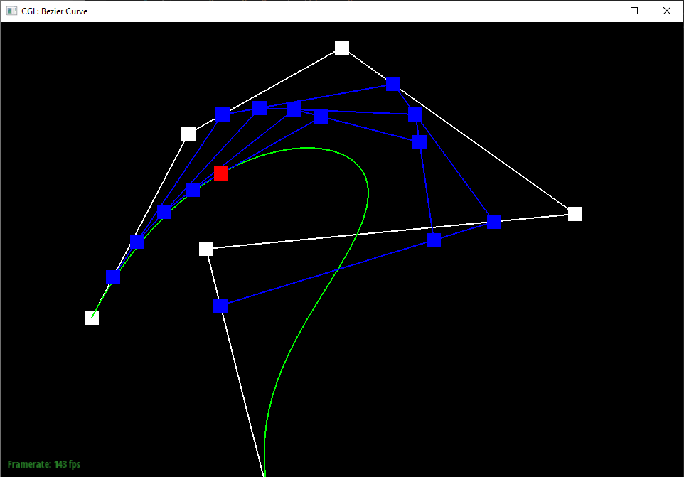
Part 2: Bezier Surfaces with Separable 1D de Casteljau
Briefly explain how de Casteljau algorithm extends to Bezier surfaces and how you implemented it in order to evaluate Bezier surfaces.For Bezier surfaces we can still use De Casteljau's algorithm. The surface is defined by a grid of control points similar to how a curve is defined by a strip of control points. To evaluate a point on the surface at (u, v), we evaluate the grid row by row. For each row of control points we use De Casteljau's algorithm exactly how we used it in the 1D case, using u as our t parameter. Once we have evaluated a point on the Bezier curve of each row, we run De Casteljau's algorithm on that set of evaluated points using v as our parameter. The resulting point is the point on our surface at (u, v).
Show a screenshot of bez/teapot.bez (not .dae) evaluated by your implementation.
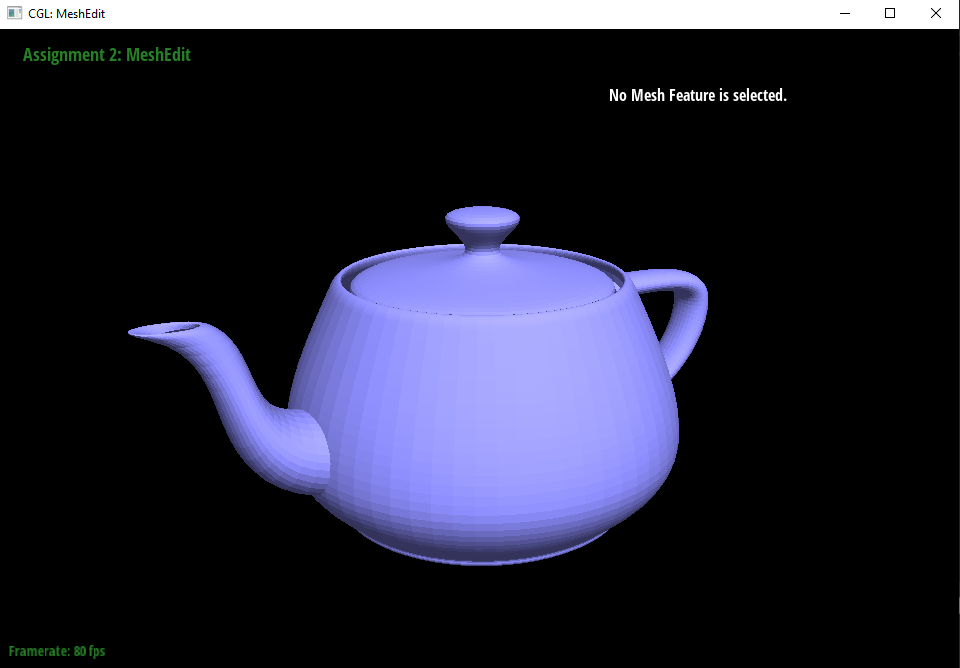
Section II: Triangle Meshes and Half-Edge Data Structure
Part 3: Area-Weighted Vertex Normals
Briefly explain how you implemented the area-weighted vertex normals.I use the following strategy to get area-weighted normals: start at our vertex's half edge. Get all three vertices of the triangle: v0 = h->vertex(), v1 = h->next()->vertex(), v2 = h->next()->next()->vertex(). Get the vectors from v0 to v1 and v2 using v1 -= v0, v2 -= v0. Taking the cross produce of v1 and v2 we get the normal. Store the normal and iterate to the next triangle using h = h->twin()->next(). Stop when h == _halfedge. Sum the each normal divided by two (their areas). Create a result vector = 0, 0, 0. For each normal, result += normal.normalize() * ((normal / 2) / areaSum). Return result.
Show screenshots of dae/teapot.dae (not .bez) comparing teapot shading with and without vertex normals. Use Q to toggle default flat shading and Phong shading.
|
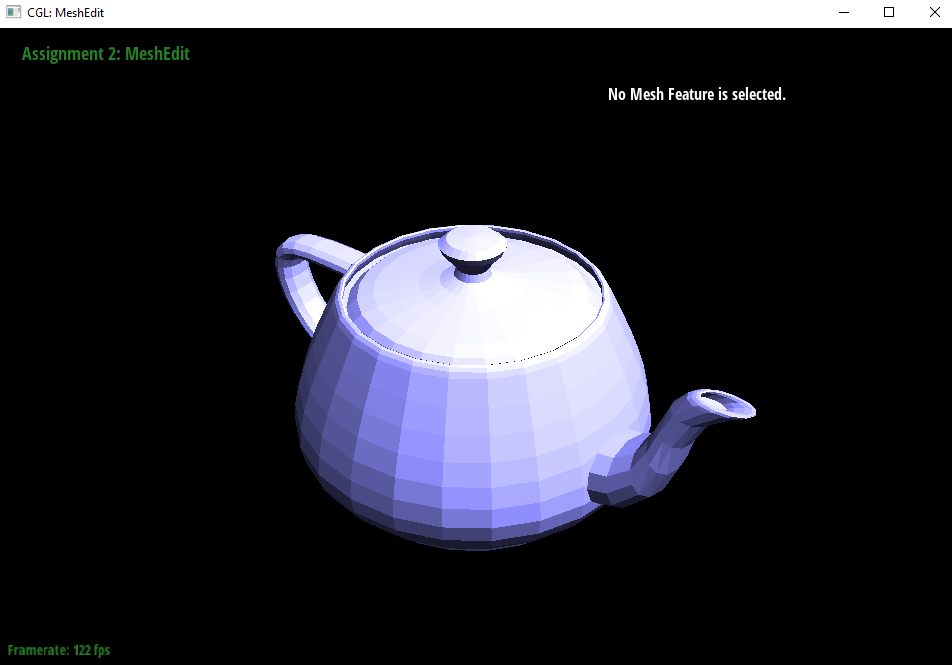
|
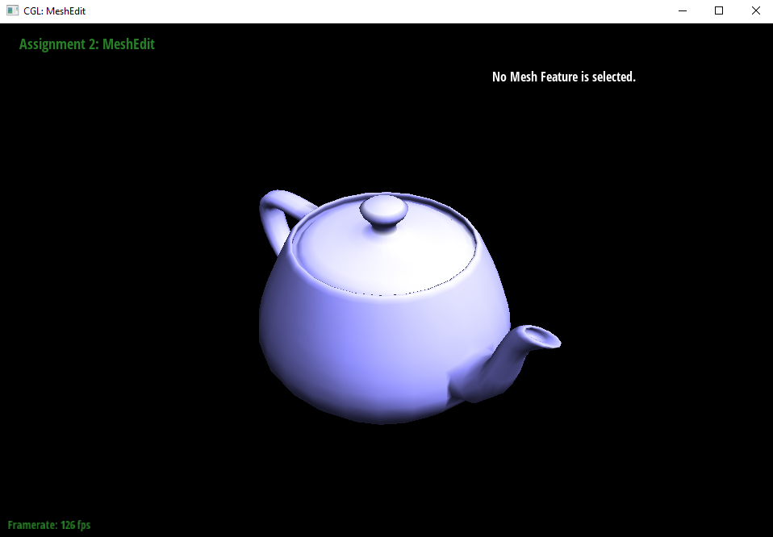
|
Part 4: Edge Flip
Briefly explain how you implemented the edge flip operation and describe any interesting implementation / debugging tricks you have used.First I worked out on paper what each feature points to before and after the flip. Then I stored a mutable iterator to each mesh feature. Then I simply set each feature's (referenced by the iterators made earlier) pointers using the information I worked out before (also using the iterators made earlier). Setting the pointers had to be done in a particular order, namely: vertices, faces, edges, inner half edges, outer half edges.
Show screenshots of the teapot before and after some edge flips.
|
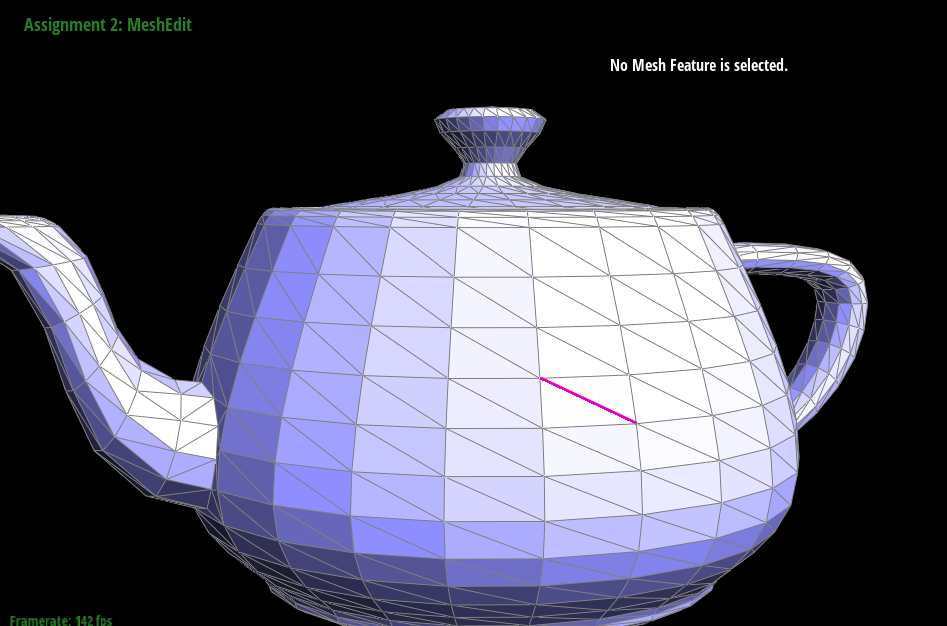
|
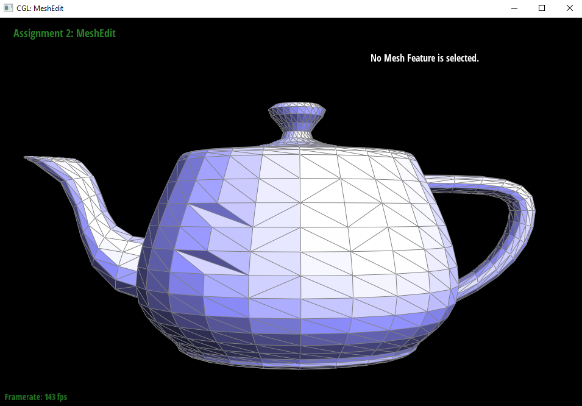
|
Write about your eventful debugging journey, if you have experienced one.
Debugging was extremely difficult, I checked to make sure all of the pointer sets were correct several times but that did not end up being the issue. I reread the spec a few times and realized that ordering was my problem. I also had to fiddle around with the iterators being references or not.
Part 5: Edge Split
Briefly explain how you implemented the edge split operation and describe any interesting implementation / debugging tricks you have used.I implemented edge splitting exactly the same way that I implemented edge flipping. The only difference was that I had to create additional mesh elements. Each one of the additional mesh elements had a mutable iterator stored just like the existing ones, except some of them had to have some member variables set, such as the new vertexes position. Other attributes such as isNew had to get set for the new elements in later parts.
Show screenshots of a mesh before and after some edge splits.
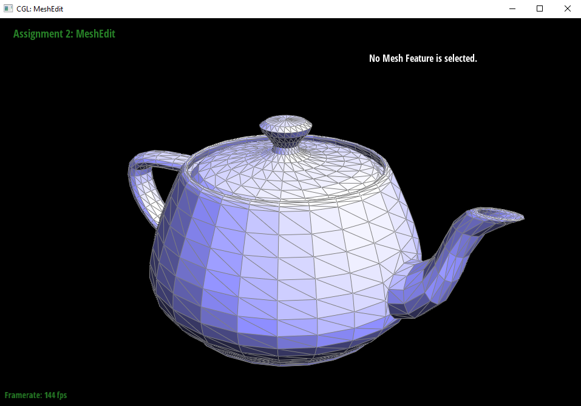
Show screenshots of a mesh before and after a combination of both edge splits and edge flips.
Write about your eventful debugging journey, if you have experienced one.
I was failing a pesky edge case but it turned out to be single character typo in one of the calls to setNeighbors.
If you have implemented support for boundary edges, show screenshots of your implementation properly handling split operations on boundary edges.
I did not implement support for them.
Part 6: Loop Subdivision for Mesh Upsampling
Briefly explain how you implemented the loop subdivision and describe any interesting implementation / debugging tricks you have used.I implemented loop subdivision in the suggested manner: Pre-computing the modified positions of the old and new vertices, subdividing every edge in the mesh, flipping edges that are new and connect one new vertex and one old vertex, and restoring the precomputed vertex positions. Notable implementation details: - When an old edge is split in half, consider the new half old as well - When iterating through and splitting edges, iterate through from 0 to nEdges to prevent us from iterating over new ones
Take some notes, as well as some screenshots, of your observations on how meshes behave after loop subdivision. What happens to sharp corners and edges? Can you reduce this effect by pre-splitting some edges?
|
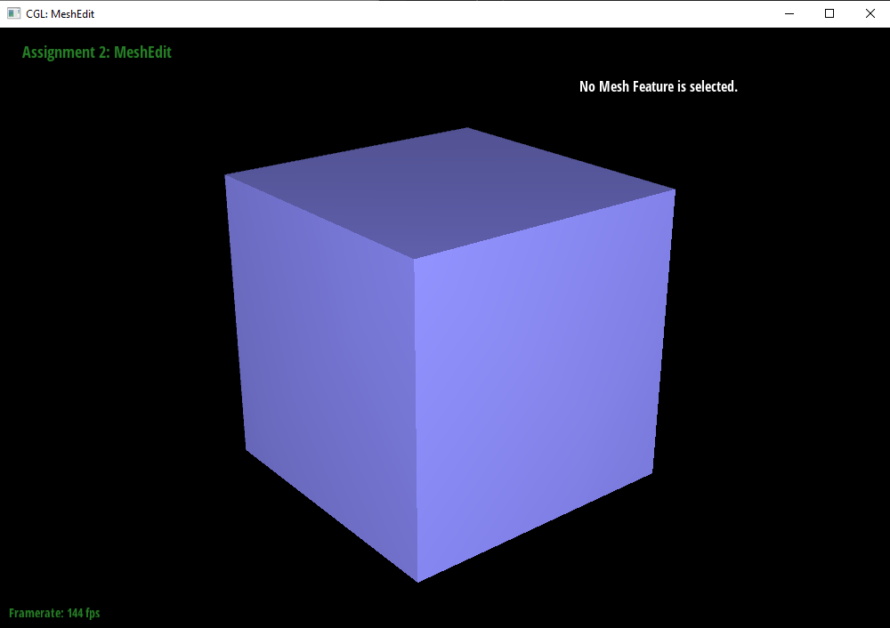
|
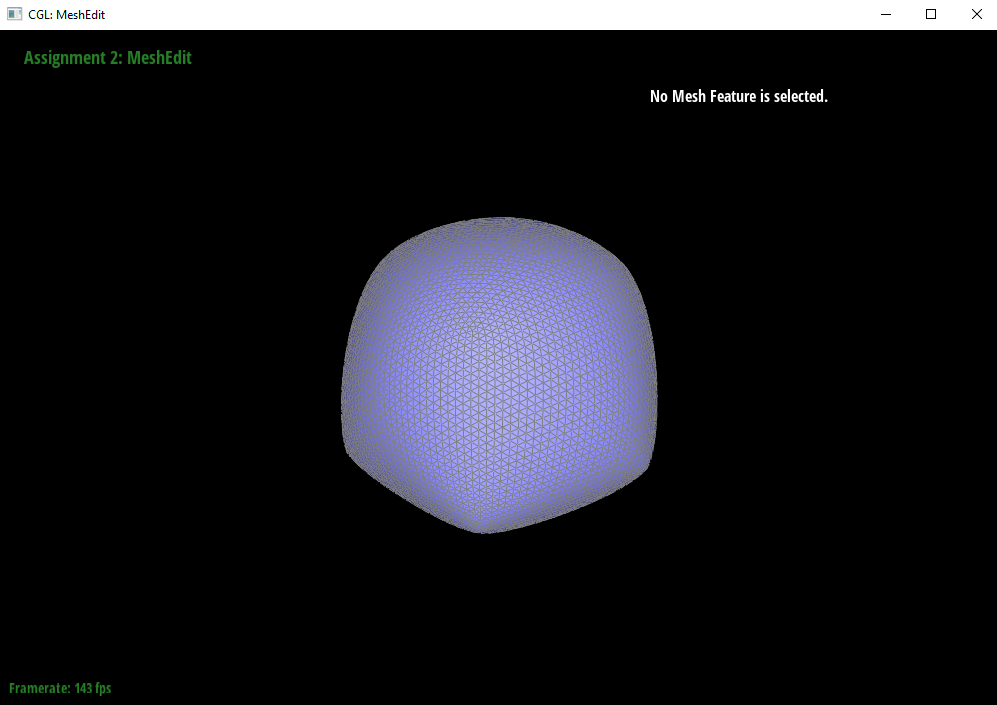
|
Load dae/cube.dae. Perform several iterations of loop subdivision on the cube. Notice that the cube becomes slightly asymmetric after repeated subdivisions. Can you pre-process the cube with edge flips and splits so that the cube subdivides symmetrically? Document these effects and explain why they occur. Also explain how your pre-processing helps alleviate the effects.
In the case of the cube, I believe this happens because of how each face of the cube has only one edge. When we compute the new position of the new vertex in that edge during subdivison, the two corners of the cube that that edge connects to contribute 6/8 of the new position while the other two corners on that face only contribute 2/8. This leads to the asymmetry. If we pre-split the cross edge on each face of the cube, the cube stays symmetric during loop subvision.
|
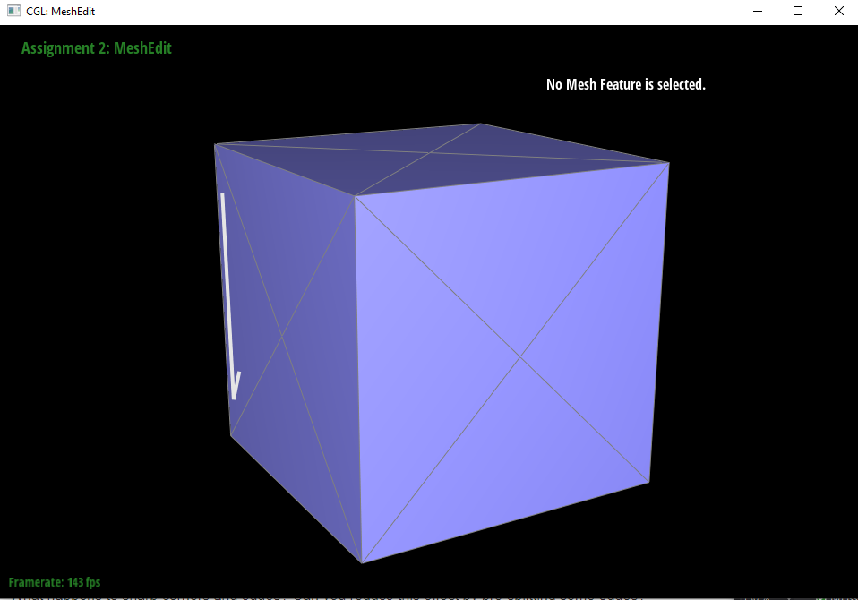
|
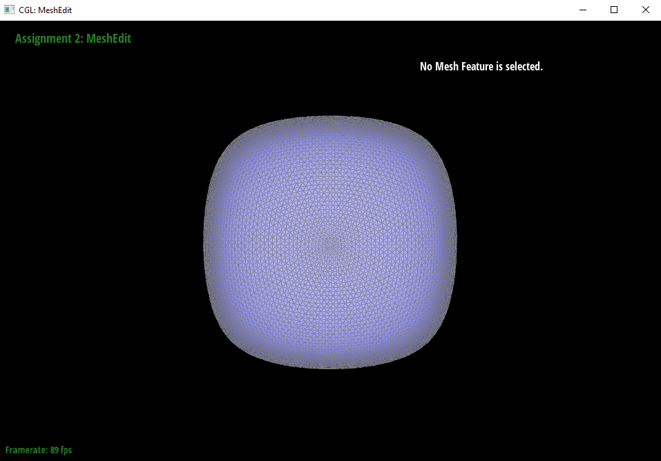
|
If you have implemented any extra credit extensions, explain what you did and document how they work with screenshots.
I did not implement extra credit extensions.